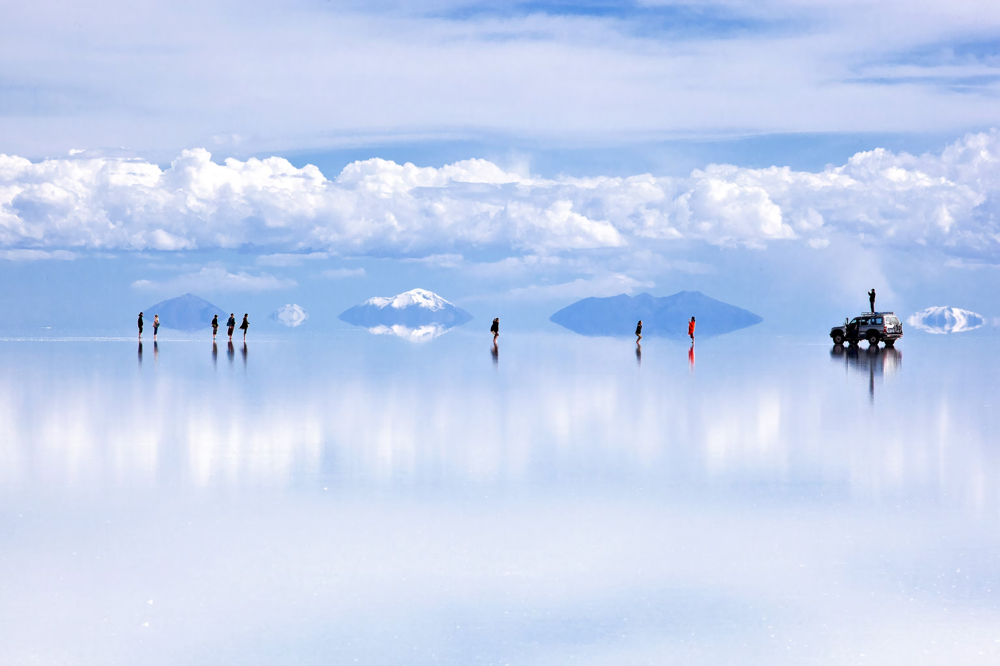
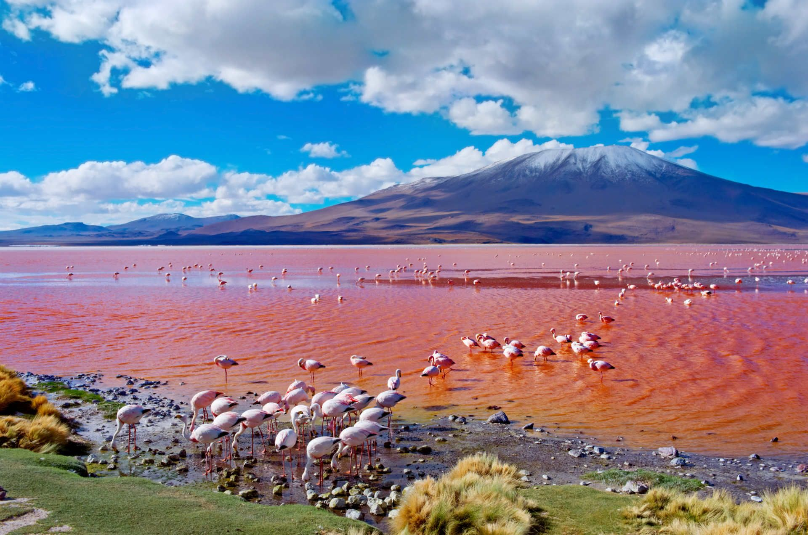
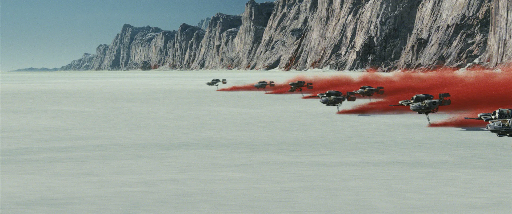

Salar de Uyuni
The Salar de Uyuni is the largest salt flat in the world with it
is being 10,582 square kilometers of what seems like another
planet. With the entiroty of the location being made of salt with
many local buildings being made of it as well.
The Salar was formed because of transformations of several
prehistoric lakes that evaporated and left a salt crust. Given
the elevation and location of the Salar allowed it to be ridiculously
flat. Given the unique properties of the salt containing lithium,
allows it to become a mirror with no horizon.

It is also home to a bunch of unique creatures such as flamingos, in
on of the most inhostiable places on the plantet they thrive. The bright
red color is a spectacle caused by the presence of red sediments and
microorganisms, including types of algae. These microorganisms are what
mainly produce red pigments and combined with sunlight and shallow waters
make the colors much more vivid. And making a striking view.

It was also figured out in many films such as Star Wars: The Last Jedi,
The Fall, and several other films as it provides a unique location with
the texture and location seeming other worldly.